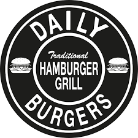
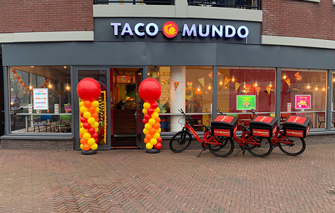

| Datum | Ervaring | Opmerkingen |
|---|---|---|
| 13.05.2018 | Gewerkt als maaltijdbezorger | Ik leerde toen kaartlezen en reizen met navigatie |
| 12.06.2021 | Mijn mavo-diploma gehaald | Overstap naar ROC van Twente |
| 04.09.2024 | Gestart met de opleiding softwaredeveloper | Ik ben momenteel bezig met deze opleiding |
Daily Burgers: Een geweldige plek om te werken met een dynamisch team. Ik heb daar 3 jaar gewerkt, 2 jaar als bezorger en 1 jaar als pizza bakker bij Daily Pizza, wat van dezelfde eigenaar was.
Taco Mundo: Hier leerde ik veel over de Mexicaanse keuken en klanttevredenheid. Ik heb hier 6 maanden gewerkt.
TSU: Hier leerde ik verkopen. Ik moest deur aan deur verkoop doen voor de Cliniclowns. Ik heb hier 4 maanden gewerkt.